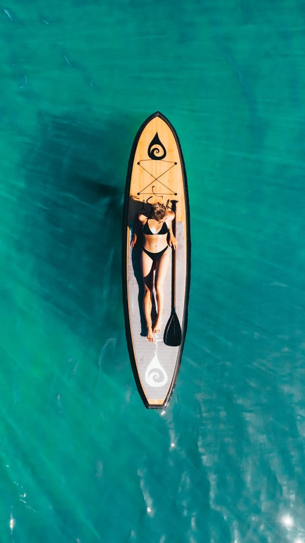

“Life is 10% what happens to us and 90% how we react to it.”– Dennis P. Kimbro
“There is no royal road to anything. One thing at a time, all things in succession. That which grows fast, withers as rapidly. That which grows slowly, endures.” – Josiah Gilbert Holland
“Be not afraid of life. Believe that life is worth living, and your belief will help create the fact.” – William James
“When I stand before God at the end of my life, I would hope that I would not have a single bit of talent left and could say, I used everything you gave me.” – Erma Bombeck
“Even if you’re on the right track, you’ll get run over if you just sit there.” – Will Rogers
“When I hear somebody sigh, ‘Life is hard,’ I am always tempted to ask, ‘Compared to what?’” – Sydney Harris
“Nurture your mind with great thoughts. To believe in the heroic makes heroes.” – Benjamin Disraeli
“Look at the sparrows; they do not know what they will do in the next moment. Let us literally live from moment to moment.” – Mahatma Gandhi
“Luck is a dividend of sweat. The more you sweat, the luckier you get.” – Ray Kroc
“When I let go of what I am, I become what I might be.” – Lao Tzu
“You may find the worst enemy or best friend in yourself.” – English Proverb
“Courage is the first of human qualities because it is the quality which guarantees all others.” – Winston Churchill
“The great thing in this world is not so much where you stand, as in what direction you are moving.” – Oliver Wendell Holmes
“Live each day as if your life had just begun.” – Johann Wolfgang Von Goethe

“Every truth passes through three stages before it is recognized. In the first, it is ridiculed. In the second, it is opposed. In the third, it is regarded as self evident.” – Arthur Schopenhauer
“The difference between a successful person and others is not lack of strength not a lack of knowledge but rather a lack of will.” – Vince Lombardi
“If not us, who? If not now, when?” – John F. Kennedy
“Don’t worry about failures, worry about the chances you miss when you don’t even try.” – Jack Canfield
“Though no one can go back and make a brand new start, anyone can start from now and make a brand new ending.” – Carl Bard
“Some men see things as they are and say why – I dream things that never were and say why not.” – George Bernard Shaw